Installation et utilisation d'un node Ethereum local
Objectif
Mettre en place un node Ethereum afin d'y déployer des contrats Solidity et les tester.
Installation de Node.js (up)
Le gestionnaire de paquets de Node.js est « npm » (Node.js Packages Manager).
- Windows
Télécharger Node.js à l'adresse : http://nodejs.org/en/download/
Il est préférable de prendre la version « Stable » pour avoir toutes les fonctionnalités.
En ligne de commande, vérifications des versions :
C:\> node --versionC:\> npm --version - MAC
Idem que Windows.
- Linux
$ curl -sL https://deb.nodesource.com/setup_#.x | sudo -E bash -Remplacer # par le numéro de la dernière version.
$ sudo apt install nodejsnpm sera installé avec la dernière version en même temps avec cette méthode.
Vérifications des versions :
$ node --version$ npm --version
Installation de WEB3.JS comme paquet de NODE.JS (up)
Recherche d'un paquet
Il faut tout d'abord faire la recherche du paquet (afin de reconstruire l’index). La recherche peut être un peu longue. Elle se lance à partir de l'invite de commande de base, avec la commande :
npm search web3
Deux types d’installation possibles d’un paquet :
- Installation « locale » dans le projet courant :
npm install web3 - Installation « globale » accessible depuis n’importe quel dossier du système (ou presque… On verra par la suite...) :
npm install -g web3
Lister les modules installés :
- En « local » :
npm list - En « global » :
npm -g list
Mettre à jour un module ou tous les modules :
- En « local » :
- Un module :
npm update web3 - Tous les modules :
npm update
- Un module :
- En « global » :
- Un module :
npm -g update web3 - Tous les modules :
npm -g update
- Un module :
Installation de Test RPC afin de créer un nœud Ethereum local de test (up)
Windows
- Installer Visual Studio Community Edition. Pour une installation personnalisée, le minimum est tout ce qui est lié à Visual C++.
- Installer Windows SDK for Windows 8.1 (si vous êtes sur Windows 8.1)
- Installer Python 2.7 si ce n’est pas déjà fait, et ajouter son dossier d'installation au PATH si vous êtes sur Windows 8.1.
- Installer OpenSSL (pas la version light). Ne pas changer le dossier d’installation et laisser celui par défaut.
- Créer un dossier "tmp" à la racine du disque par défaut (ceci ne semble pas nécessaire à 100 %).
Puis :
npm install -g ethereumjs-testrpc(ici en « global » dans l’exemple)
MAC
Avoir les « XCode Command Line Tools » installés.
Puis :
npm install -g ethereumjs-testrpc(ici en « global » dans l’exemple)
Linux
Installer le paquet « build-essential » :
sudo apt-get install build-essentialPuis :
npm install -g ethereumjs-testrpc(ici en « global » dans l’exemple)
Lancer le node et initier Web3 (up)
On partira du principe que les installations sont faites en "global". Si des installations ont été faites en "local" il suffit d'adapter les chemins (on peut contrôler les messages d'erreurs).
Windows
C:\Users\user\AppData\Roaming\npm\node_modules> testrpcMAC
Trouver l'emplacement global ou local, puis :
.../dossier/node_modules/>$ testrpcLinux
root@mon_nom:/usr/lib/node_modules# testrpc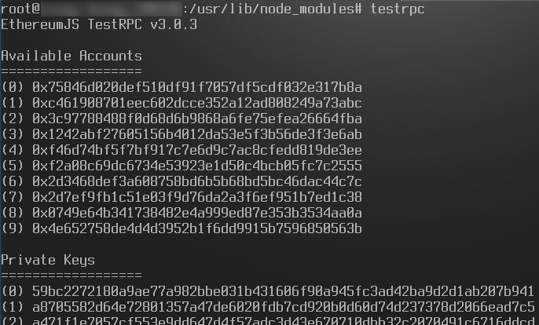

Références pour TestRPC : https://github.com/ethereumjs/testrpc
Initions Web3 :
A partir du terminal, dans une nouvelle fenêtre ou onglet, se rendre dans le répertoire « node_modules » des paquets de Node.js. En tous les cas, se rendre dans le répertoire local ou global où est installé le paquet « web3 ». Il peut s’agir d’un projet isolé dans un répertoire en local. Puis lancer le node à partir de là.
Par exemple, en installation globale sur Linux :
root@mon_nom:/usr/lib/node_modules# nodeOn initie maintenant web3 et le serveur :
var Web3 = require(‘web3’);var web3 = new Web3(new Web3.providers.HttpProvider("http://localhost:8545"));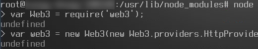
On vérifie que la connexion est effective entre le node et web3 si la commande suivante retourne le booléen "true" :
web3.isConnected()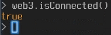
Par défaut, dix comptes Ethereum sont crées. On obtient la liste de ces comptes au lancement de TestRPC, ainsi que leur clefs privées. On obtient même le brain wallet.
Pour réafficher la liste des comptes on peut utiliser la commande (toujours dans le node (la ligne dans la console commence par « > »)) :
web3.eth.accountsPar défaut, le compte par défaut n’est pas défini. Pour l’attribuer on peut choisir un des dix comptes crées au lancement et l’y affecter :
web3.eth.defaultAccount = "0x75846d020def5...032e317b8a"Le point-virgule en fin de commande n’est pas nécessaire.
Pour obtenir la balance d’un compte :
web3.eth.getBalance("0x75846d020def5...032e317b8a")
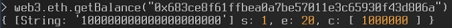
Conversion de la balance (par l’intermédiaire de la gestion des grands nombres bignumber.js de web3.js), dans cet exemple en Ether à partir de Wei :
web3.fromWei(web3.eth.getBalance("0x75846d020def5...032e317b8a"), "ether").toNumber()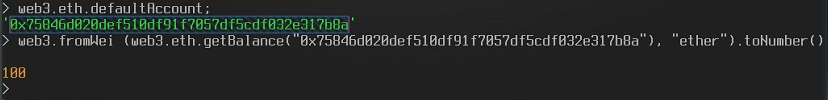
Création du contrat sur la blockchain Ethereum locale (up)
Création d’un objet contrat (instance d’un contrat Solidity déjà compilé)
Note :
On peut également compiler du code Solidity à partir de Web3.js en utilisant la syntaxe de commande :
« sourceString » est le code source sous forme de string.web3.eth.compiler.solidity(sourceString [, callback])
On peut également compiler du code LLL ou Serpent.
Pour plus de détails : https://github.com/ethereum/wiki/wiki/JavaScript-API#web3ethcompilesolidity
Par la suite, on va voir qu’il est également possible de compiler le code source d’un contrat à partir d’un fichier ".sol" et du module Node.js dont le paquet s’appelle "solc".
A partir du contrat compilé on récupère l’ABI (interface) sous forme d’un array et on l’insère dans une variable (par clarté) JavaScript directement en commande Node.js :
var abi = [{"constant":true,"inputs":[],"name":"creator","outputs":[{"name":"","type":"address"}],"payable":false,"type":"function"},{"constant":true,"inputs":[{"name":"","type":"address"}],"name":"balanceOf","outputs":[{"name":"","type":"uint256"}],"payable":false,"type":"function"},{"constant":false,"inputs":[{"name":"dest","type":"address"},{"name":"quantity","type":"uint256"}],"name":"transfer","outputs":[],"payable":false,"type":"function"},{"inputs":[{"name":"totalShares","type":"uint256"}],"payable":false,"type":"constructor"}];Et on crée l’objet contrat :
var monContrat = web3.eth.contract(abi);On doit également récupérer le bytecode du contrat (ou data) :
var bytecode = "606060405234610000576040516020806103c5833981016040528080519060200190919050505b33600060006101000a81548173ffffffffffffffffffffffffffffffffffffffff021916908373ffffffffffffffffffffffffffffffffffffffff1602179055508060016000600060009054906101000a900473ffffffffffffffffffffffffffffffffffffffff1673ffffffffffffffffffffffffffffffffffffffff1673ffffffffffffffffffffffffffffffffffffffff168152602001908152602001600020819055505b505b6102e6806100df6000396000f30060606040526000357c0100000000000000000000000000000000000000000000000000000000900463ffffffff16806302d05d3f1461005457806370a08231146100a3578063a9059cbb146100ea575b610000565b3461000057610061610126565b604051808273ffffffffffffffffffffffffffffffffffffffff1673ffffffffffffffffffffffffffffffffffffffff16815260200191505060405180910390f35b34610000576100d4600480803573ffffffffffffffffffffffffffffffffffffffff1690602001909190505061014c565b6040518082815260200191505060405180910390f35b3461000057610124600480803573ffffffffffffffffffffffffffffffffffffffff16906020019091908035906020019091905050610164565b005b600060009054906101000a900473ffffffffffffffffffffffffffffffffffffffff1681565b60016020528060005260406000206000915090505481565b600081141561017257610000565b3373ffffffffffffffffffffffffffffffffffffffff168273ffffffffffffffffffffffffffffffffffffffff1614156101ab57610000565b60008273ffffffffffffffffffffffffffffffffffffffff1614156101cf57610000565b80600160003373ffffffffffffffffffffffffffffffffffffffff1673ffffffffffffffffffffffffffffffffffffffff16815260200190815260200160002054101561021b57610000565b80600160008473ffffffffffffffffffffffffffffffffffffffff1673ffffffffffffffffffffffffffffffffffffffff1681526020019081526020016000206000828254019250508190555080600160003373ffffffffffffffffffffffffffffffffffffffff1673ffffffffffffffffffffffffffffffffffffffff168152602001908152602001600020600082825403925050819055505b50505600a165627a7a72305820e6e3cf272e359423670eb95cbbde230f11553ebdd4dfbc8c51238f6f518dc1f50029";Avant de déployer le contrat, on va évaluer le gaz consommé avec l’aide du bytecode :
var gasEstimate = web3.eth.estimateGas({data: bytecode});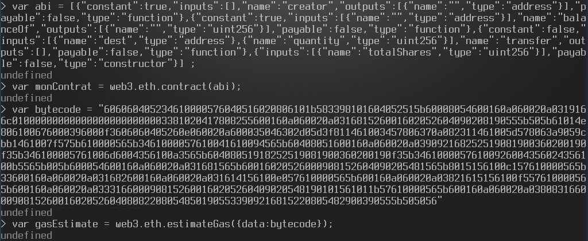
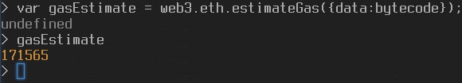
Déploiement du contrat
var monContratDeploye = monContrat.new(constructorParam1, constructorParam2, {from:adresseEthExp, data:bytecode, gas:gasEstimate},
function (error, monContrat) {
if (!error) {
if (!monContrat.address) {
console.log(monContrat.transactionHash);
}
else {
console.log(monContrat.address);
}
}
}
);Suivant la fonction anonyme utilisée, la commande précédente retourne l’adresse du contrat déployé et/ou le hash de la transaction du déploiement dans la console du node. Attention, des retours sont aussi affichés dans la fenêtre de terminal de TestRPC. De plus, on peut manquer de gaz si l’estimation (gasEstimate) est trop faible. Cette erreur sera affichée dans la console de TestRPC. On peut simplement entrer une valeur plus importante de gaz pour être sûr.
var deployeur = web3.eth.accounts[1];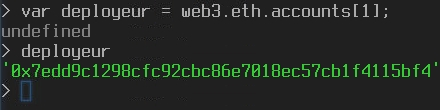
On a choisit l’index « 1 » dans l’exemple pour le compte qui déploie le contrat mais on aurait pu en choisir un autre.
var monContratDeploye = monContrat.new (123456, {from:deployeur, data:bytecode, gas:500000}, function (error, monContrat) {if (!error) {if (!monContrat.address) {console.log(monContrat.transactionHash);} else {console.log(monContrat.address);}}});On peut facilement vérifier l’adresse du contrat déployé ainsi que le hash de la transaction rattachée :
monContratDeploye.address
monContratDeploye.transactionHash
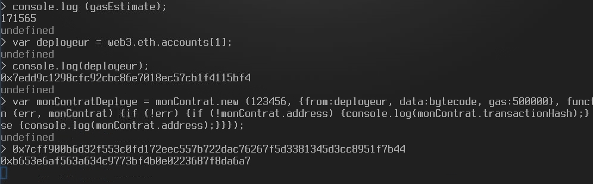
Du côté du terminal TestRPC (autre contrat déployé, donc adresse différente dans l'exemple) :
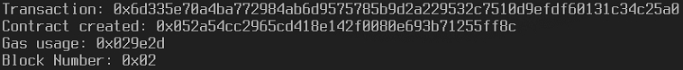
Vérifions le déploiement :
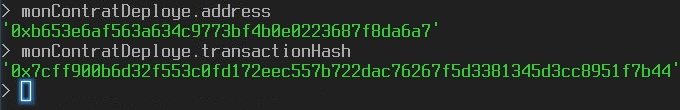
A noter que l’on peut récupérer le contrat sous forme de fichier « .sol », le compiler et intégrer les valeurs directement dans les commandes !
const fs = require("fs");
const solc = require('solc');
Attention, il faut installer le module « solc » pour Node.js au préalable. Le fichier « .sol » devra être placé dans le projet (potentiellement dans /usr/lib/node_modules sur Linux en installation globale).
var source = fs.readFileSync('nameContract.sol', 'utf8');
var compiledContract = solc.compile(source, 1);
var abi = compiledContract.contracts['nameContract'].interface;
var bytecode = compiledContract.contracts['nameContract'].bytecode;
var gasEstimate = web3.eth.estimateGas({data: bytecode});
var MyContract = web3.eth.contract(JSON.parse(abi));
Il faut maintenant instancier le contrat :
var monContratInstance = monContrat.at(monContratDeploye.address);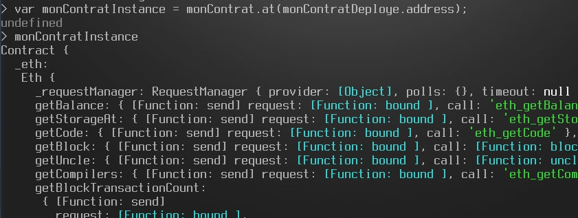
Appeler une fonction du contrat (up)
La syntaxe est la suivante :
transaction_Hash = monContratInstance.ma_fonction_du_contrat.sendTransaction([ma_fonction_du_contrat_param1, ma_fonction_du_contrat_param2, ...]);A noter que le résultat est le hash de la transaction qui a servi à appeler la fonction dans le contrat (attention « transactionHash » est réservé).
Par exemple, si dans notre contrat nous avons une fonction « transfer » prenant en paramètres un expéditeur « exp » en premier, un destinataire « dest » en second, et une valeur « val » en troisième, la commande devient :
transaction_Hash = monContratInstance.transfer.sendTransaction(exp, dest, val);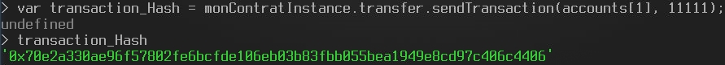
Appeler un objet à l’intérieur du contrat (up)
De la même manière que le contrat a été transformé en objet et qu’une fonction interne en devient un membre (ou une méthode), un objet interne au contrat en devient un membre.
Ainsi, on peut utiliser ce genre de commande dans le node :
var valeur = monContratInstance.monObjet(membreDeMonObjet);Par exemple, si dans le contrat se trouve un mapping « balanceOf » qui associe une « Key_Value » de type « address » avec un entier naturel « uint » :
var balanceInterne = monContratInstance.monObjet(0x654f654sg654865f…);Cette commande affectera l’entier « uint » (la balance interne au contrat) associé au compte « 0x654f654sg654865f… » à « balanceInterne ».
Exemple :
var transaction_Hash = monContratInstance.transfer.sendTransaction(accounts[1], 11111);
undefined
transaction_Hash
'0x70e2a330ae96f57802fe6bcfde106eb03b83fbb055bea1949e8cd97c406c4406'
monContratInstance.balanceOf(accounts[0])
{ [String: '112345'] s: 1, e: 5, c: [ 112345 ] }
monContratInstance.balanceOf(accounts[1])
{ [String: '11111'] s: 1, e: 4, c: [ 11111 ] }
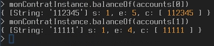
Ici, on a réalisé un transfert interne d’une valeur de « 11111 » de « accounts[0] » vers « accounts[1] ». A l’origine, « accounts[0] » a une balance de « 123456 » et « accounts[1] » a une balance de « 0 ». On peut constater que les balances ont bien été mises à jour :
123456 – 11111 = 112345
0 + 11111 = 11111
Remarques :
Il est important de bien comprendre qu'ici l'expéditeur n'étant pas spécifié, c'est le compte pas défaut qui a été utilisé en tant que tel !
Autre subtilité ici dans notre exemple : la fonction "transfer" prend de toute façon comme expéditeur l'auteur de la transaction d'appel, et en plus, cette fonction ajoute naturellement le destinataire dans le mapping "balanceOf". C'est la raison pour laquelle la commande "monContratInstance.balanceOf(accounts[1])" peut fonctionner...
La console depuis le début (côté terminal Node.js) (up)
> var Web3 = require('web3');
undefined
> var web3 = new Web3(new Web3.providers.HttpProvider("http://localhost:8545"));
undefined
> var fs = require('fs');
undefined
> var solc = require('solc');
undefined
> accounts = web3.eth.accounts;
[ '0xf68427e286ca8e5db788a79cdc3095ef298d4721',
'0x77cb8568f88b2602b2c6a5fb18d056a520d43e6d',
'0x744fa7859cef4d86b830123e3c881a3dd73dfa01',
'0x5d8415674f3da6b11724800844b3c2d6ea5ea0ae',
'0x304b7f4cba250674d31cdc010dd1b639096b06a1',
'0x5eb96a1f481b3fced614733d28ea666a35d385ac',
'0x6909e7603c61ad60abd3f468e09eeb037713a20d',
'0x64a96c18f574192081938b75a831cb42cd05d8c8',
'0x5a7e5ad14de6a1b0199171360a99b3df441fa0c5',
'0xdee2d8f7086d50e926ff2ab17b5302b0cc81673d' ]
> web3.eth.defaultAccount = accounts[0];
'0xf68427e286ca8e5db788a79cdc3095ef298d4721'
> var abi = [{"constant":true,"inputs":[],"name":"creator","outputs":[{"name":"","type":"address"}],"payable":false,"type":"function"},{"constant":true,"inputs":[{"name":"","type":"address"}],"name":"balanceOf","outputs":[{"name":"","type":"uint256"}],"payable":false,"type":"function"},{"constant":false,"inputs":[{"name":"dest","type":"address"},{"name":"quantity","type":"uint256"}],"name":"transfer","outputs":[],"payable":false,"type":"function"},{"inputs":[{"name":"totalShares","type":"uint256"}],"payable":false,"type":"constructor"}];
undefined
> var bytecode = "606060405234610000576040516020806103c5833981016040528080519060200190919050505b33600060006101000a81548173ffffffffffffffffffffffffffffffffffffffff021916908373ffffffffffffffffffffffffffffffffffffffff1602179055508060016000600060009054906101000a900473ffffffffffffffffffffffffffffffffffffffff1673ffffffffffffffffffffffffffffffffffffffff1673ffffffffffffffffffffffffffffffffffffffff168152602001908152602001600020819055505b505b6102e6806100df6000396000f30060606040526000357c0100000000000000000000000000000000000000000000000000000000900463ffffffff16806302d05d3f1461005457806370a08231146100a3578063a9059cbb146100ea575b610000565b3461000057610061610126565b604051808273ffffffffffffffffffffffffffffffffffffffff1673ffffffffffffffffffffffffffffffffffffffff16815260200191505060405180910390f35b34610000576100d4600480803573ffffffffffffffffffffffffffffffffffffffff1690602001909190505061014c565b6040518082815260200191505060405180910390f35b3461000057610124600480803573ffffffffffffffffffffffffffffffffffffffff16906020019091908035906020019091905050610164565b005b600060009054906101000a900473ffffffffffffffffffffffffffffffffffffffff1681565b60016020528060005260406000206000915090505481565b600081141561017257610000565b3373ffffffffffffffffffffffffffffffffffffffff168273ffffffffffffffffffffffffffffffffffffffff1614156101ab57610000565b60008273ffffffffffffffffffffffffffffffffffffffff1614156101cf57610000565b80600160003373ffffffffffffffffffffffffffffffffffffffff1673ffffffffffffffffffffffffffffffffffffffff16815260200190815260200160002054101561021b57610000565b80600160008473ffffffffffffffffffffffffffffffffffffffff1673ffffffffffffffffffffffffffffffffffffffff1681526020019081526020016000206000828254019250508190555080600160003373ffffffffffffffffffffffffffffffffffffffff1673ffffffffffffffffffffffffffffffffffffffff168152602001908152602001600020600082825403925050819055505b50505600a165627a7a72305820e6e3cf272e359423670eb95cbbde230f11553ebdd4dfbc8c51238f6f518dc1f50029";
undefined
> var monContrat = web3.eth.contract(abi);
undefined
> var deployeur = web3.eth.accounts[0];
undefined
> var monContratDeploye = monContrat.new (123456, {from:deployeur, data:bytecode, gas:500000}, function (err, monContrat) {if (!err) {if (!monContrat.address) {console.log(monContrat.transactionHash);} else {console.log(monContrat.address);}}});
undefined
> 0x5cacb6437cd844988c7f9ba0fbfa90bb4be7fc395347ce008f0fc1615de47847
0xe0aee942ef1dc799a9207991ecd8d5819bd00a8c
> var monContratInstance = monContrat.at(monContratDeploye.address);
undefined
> var transaction_Hash = monContratInstance.transfer.sendTransaction(accounts[1], 11111);
undefined
> transaction_Hash
'0x70e2a330ae96f57802fe6bcfde106eb03b83fbb055bea1949e8cd97c406c4406'
> monContratInstance.balanceOf(accounts[0])
{ [String: '112345'] s: 1, e: 5, c: [ 112345 ] }
> monContratInstance.balanceOf(accounts[1])
{ [String: '11111'] s: 1, e: 4, c: [ 11111 ] }